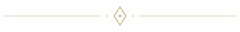
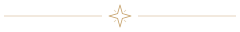
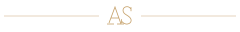
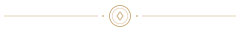
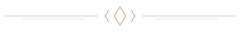

Acces privat
01Un loc fără nume
Cei care știu de el nu vorbesc despre el.

Gaură de cheie · discret, confidențial
ADRESA SECRETĂ / STUDIU DE DETALIU
06 MODELE DE SEPARATOARE
AURIU MAT · LINII FINE
Cei care știu de el nu vorbesc despre el.
Gaură de cheie · discret, confidențial
Cei care știu de el nu vorbesc despre el.

Romb · simplu, atemporal
Cei care știu de el nu vorbesc despre el.

Stea · coordonate, descoperire
Cei care știu de el nu vorbesc despre el.

Monogramă · personal, exclusiv
Cei care știu de el nu vorbesc despre el.

Sigiliu · dosar privat, invitație
Cei care știu de el nu vorbesc despre el.

Geometrie · elegant, arhitectural